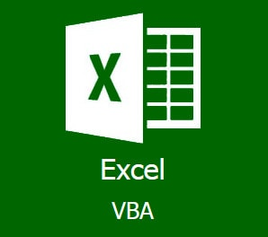
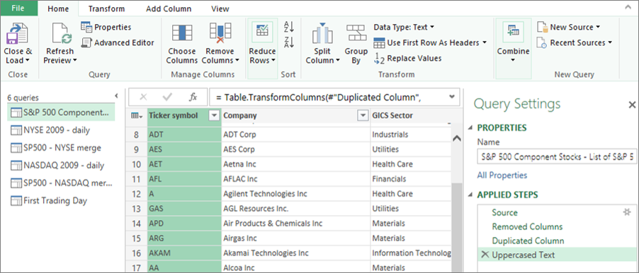
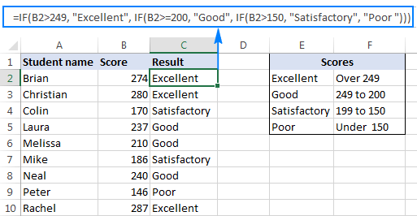

Advanced spreadsheet systems remain one of the most practical and widely used technologies in accounting and finance. When designed well, spreadsheet environments such as Microsoft Excel become far more than manual grids for data entry — they become structured operating tools capable of modeling scenarios, automating recurring work, integrating external data, and supporting more controlled financial reporting. Combined with VBA, Power Query, Power Pivot, dynamic formulas, and disciplined workbook design, spreadsheets can serve as a flexible platform for both operational efficiency and higher-level analytical support.
This is especially important because many accounting workflows still depend on environments that must balance speed, flexibility, accuracy, and ease of use. A well-designed spreadsheet model can bridge the gap between raw transactional information and refined management outputs without requiring a fully separate software platform for every process. That makes advanced spreadsheet techniques particularly valuable in departments that need adaptable tools but also require stronger structure and consistency than simple ad hoc workbooks can provide.
In practice, advanced spreadsheet environments are not defined by complexity alone. They are defined by how effectively they organize information, reduce manual effort, and support reliable outputs over time. The sections below focus on the most important ways spreadsheets and VBA contribute to financial modeling, automation, and reporting in modern accounting workflows.

Modern spreadsheet use in accounting begins with structure. Strong spreadsheet systems separate inputs, calculations, support data, and outputs into a logical framework that improves clarity and reduces error risk. Rather than relying on scattered formulas and disconnected tabs, finance teams can use workbook architecture, standardized templates, named ranges, dynamic formulas, and organized sheet design to build models that are more scalable and easier to maintain.
A structured workbook is valuable because it makes the logic of the model easier to follow and the output easier to trust. When assumptions, formulas, support data, and summaries are intentionally organized, users can update the file more confidently and review results with less confusion. This reduces dependency on one person remembering where everything is and creates a more durable tool that can be reused over time.
Spreadsheet platforms such as Microsoft Excel support capabilities including financial modeling, scenario analysis, reconciliations, budgeting, forecasting, dynamic summaries, and dashboard-style reporting. When paired with tools like Power Query and Power Pivot, spreadsheets also become more effective for handling larger and more relational data structures.

One of the most valuable strengths of advanced spreadsheet environments is their ability to automate repetitive accounting work. Through VBA, workbook logic, event-driven processes, automated formatting, import routines, validation rules, and system-driven task execution, spreadsheets can move beyond static reporting and become active workflow tools. This includes automating reconciliations, exception reporting, journal entry support, report refreshes, data cleanups, file preparation, and user-guided workflow steps within the workbook itself.
Automation matters because recurring accounting work often follows the same general logic each cycle, even if the underlying data changes. Once that logic is translated into a repeatable process, the workbook can reduce manual handling, shorten turnaround time, and improve consistency from one reporting period to the next. This allows teams to spend less time rebuilding outputs and more time reviewing results, investigating anomalies, and supporting business decisions.
VBA expands the capability of spreadsheets by allowing finance teams to build custom procedures, reusable modules, button-driven tools, and workbook-level automation tailored to specific processes. Combined with Power Query, formula logic, and Excel’s broader object model, VBA supports a wide range of financial automation needs without requiring a fully separate application environment.

Advanced spreadsheets also play an important role in financial control and reporting environments. When paired with disciplined design, they can support exception tracking, reconciliation oversight, standardized review points, management summaries, and controlled outputs for operational or month-end reporting. Features such as data validation, protected logic, conditional formatting, interactive summaries, lookup structures, analytical formulas, data modeling tools, and VBA-based checks all contribute to a more reliable reporting process.
This is one reason spreadsheets remain so relevant despite the growth of newer platforms. They combine familiarity with flexibility, allowing finance teams to design targeted tools quickly while still supporting structured review and reporting needs. In many organizations, spreadsheets serve as the practical middle ground between raw financial data and polished outputs that decision-makers can use.
Spreadsheet techniques remain especially valuable because they allow accounting professionals to adapt tools to changing business needs without abandoning the controls and logic built into the process. Used well, spreadsheets become more than temporary files — they become practical systems for connecting raw data, analytical review, and reporting execution.